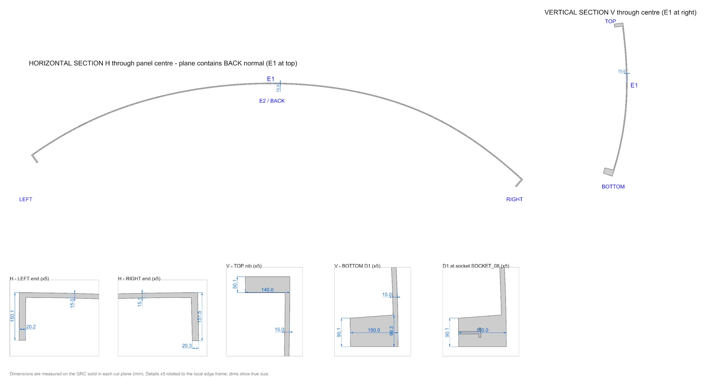
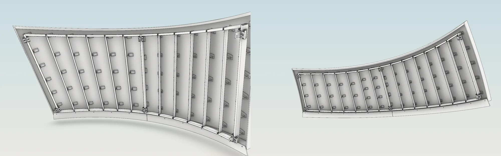
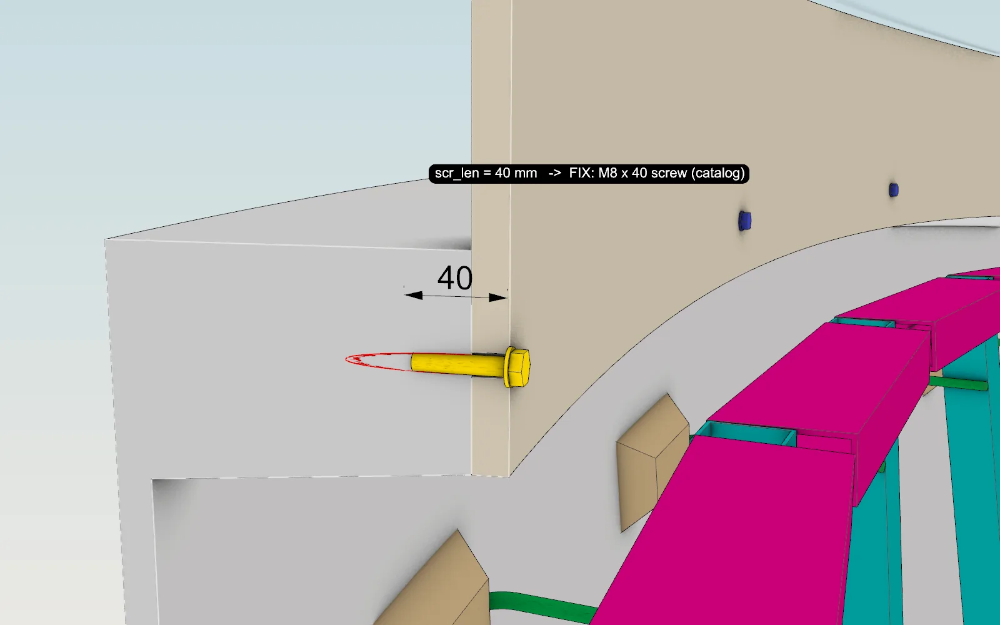
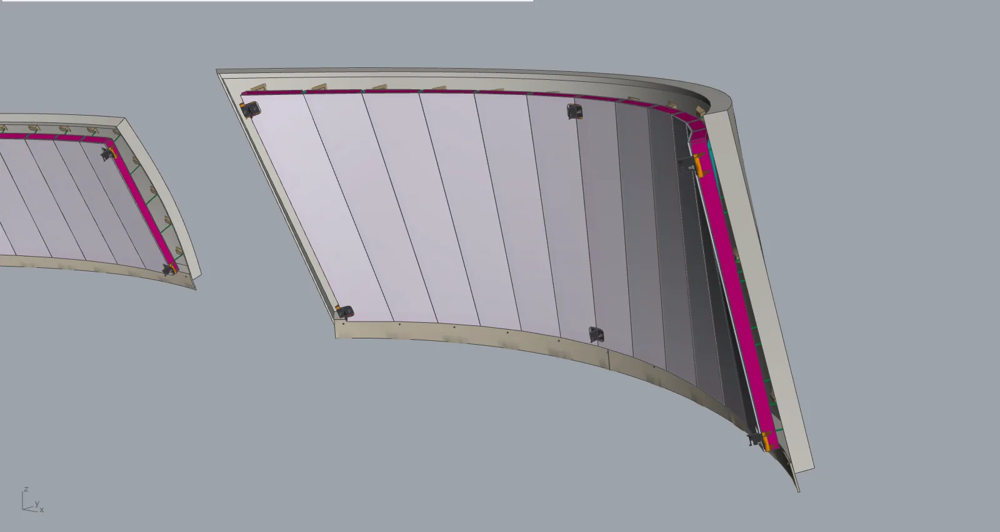
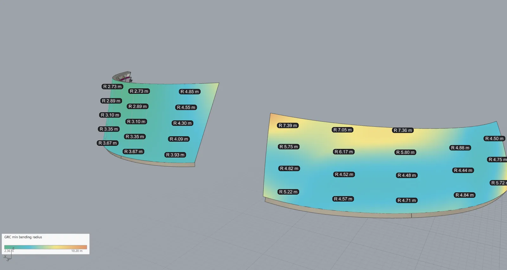
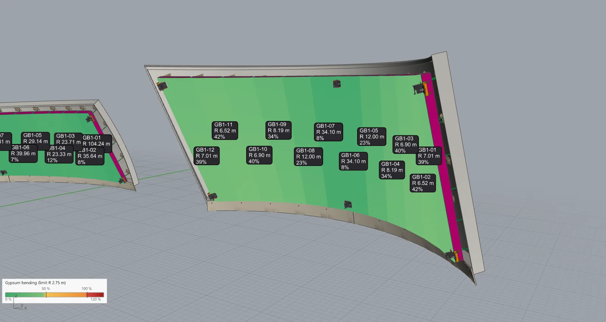
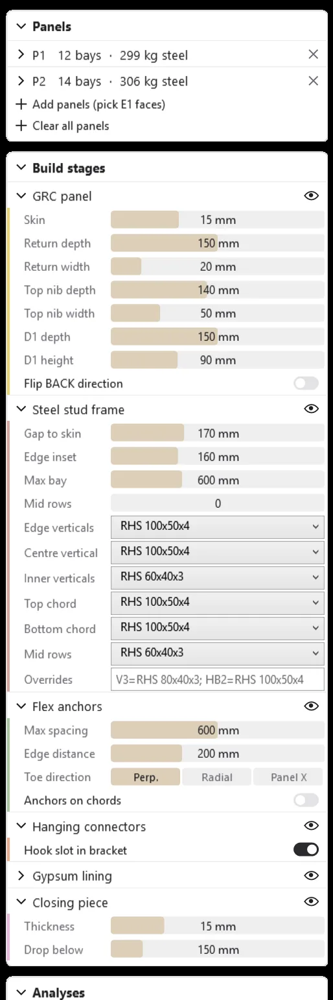
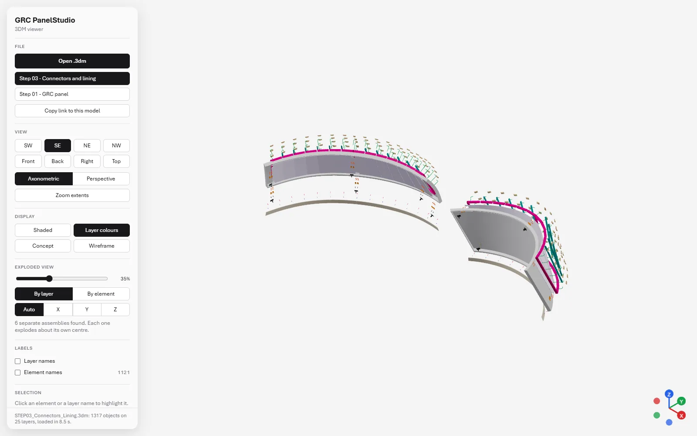
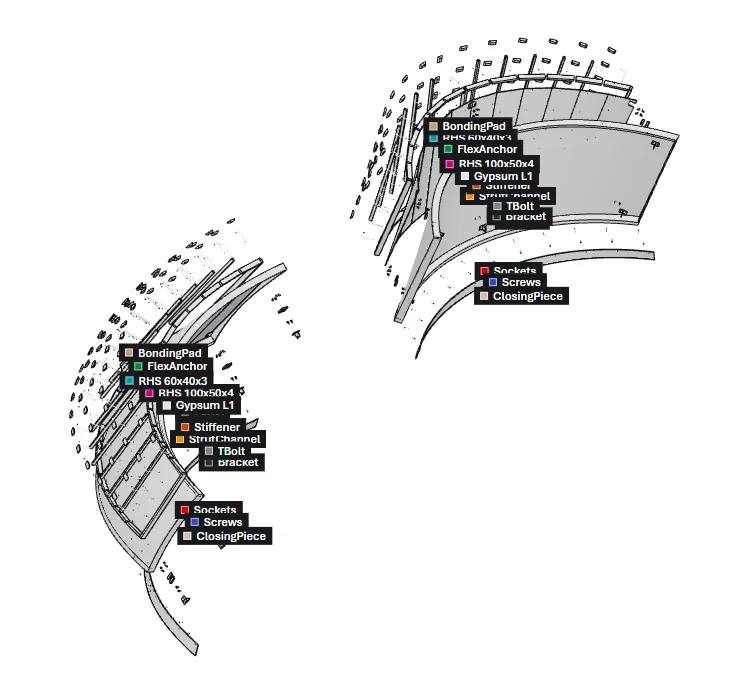

max_bayKEEP
600 mm. Design variable: sets the stud count.600 mm. Variável de projeto: define o número de montantes.

One finish surface in; panel, stud frame, anchors, connectors, lining and fabrication lists out. Built step by step in Grasshopper with Claude and the Rhino MCP, then turned into a Rhino 9 plug-in and a web viewer. Entra uma superfície de acabamento; saem o painel, o quadro de montantes, as ancoragens, os conectores, o revestimento e as listas de fabricação. Feito etapa por etapa no Grasshopper com o Claude e o Rhino MCP, depois virou um plug-in para Rhino 9 e um visualizador web.
A design test from a GRC cladding fabricator: one 3D face of a curved panel and a sample shop drawing. Each step below was a written brief run in Rhino, with a stop for review before anything was built. Um teste de projeto de um fabricante de fachadas em GRC: a face 3D de um painel curvo e uma prancha de fabricação de exemplo. Cada etapa abaixo foi um roteiro escrito e executado no Rhino, com uma parada para revisão antes de construir.
A 15 mm skin, returns on every edge and a thickened bottom edge with Ø8 cast-in sockets, joined into one closed solid. Pele de 15 mm, retornos em todas as bordas e borda inferior engrossada com insertos Ø8, unidos em um único sólido fechado.


Straight RHS studs at an even number of bays up to 600 mm, 170 mm behind the skin. Chords are split into straight pieces between the studs. Montantes retos em tubo retangular, em número par de vãos de até 600 mm, a 170 mm da pele. As travessas são divididas em trechos retos entre os montantes.

The panel hangs from rigid connectors; anchors only take wind. Gypsum lines the back, and a GRC strip closes the bottom. O painel fica pendurado em conectores rígidos; as ancoragens só recebem vento. Gesso reveste o fundo e uma tira de GRC fecha a base.


Every input was listed and classified, so only real design variables stay as sliders. The geometry must not change. Cada entrada foi listada e classificada, para que só as variáveis de projeto continuem como sliders. A geometria não pode mudar.
600 mm. Design variable: sets the stud count.600 mm. Variável de projeto: define o número de montantes.

FOOT_CLEAR + ROD_D + PAD_COVER = 30 mm

SCR_LEN = 40.0 (M8×40, catalog)(M8×40, catálogo)
The reviewed definition ported to C#: no Grasshopper needed. Pick a finish face, move a few sliders, bake to layers or export the CSV lists. A definição revisada portada para C#, sem precisar do Grasshopper. Escolha a face de acabamento, ajuste alguns sliders, gere as camadas ou exporte as listas CSV.




Share the model with anyone, no Rhino needed. The browser opens the .3dm with its layers, colours and data, from a plain static site. Compartilhe o modelo com qualquer pessoa, sem precisar do Rhino. O navegador abre o .3dm com camadas, cores e dados, a partir de um site estático simples.


React · Three.js · rhino3dm